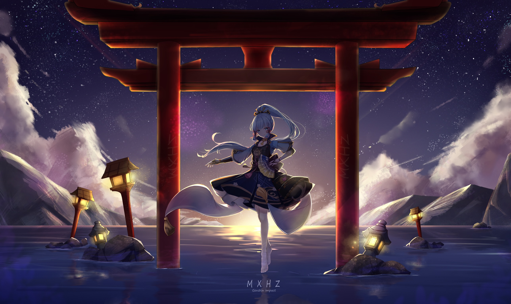
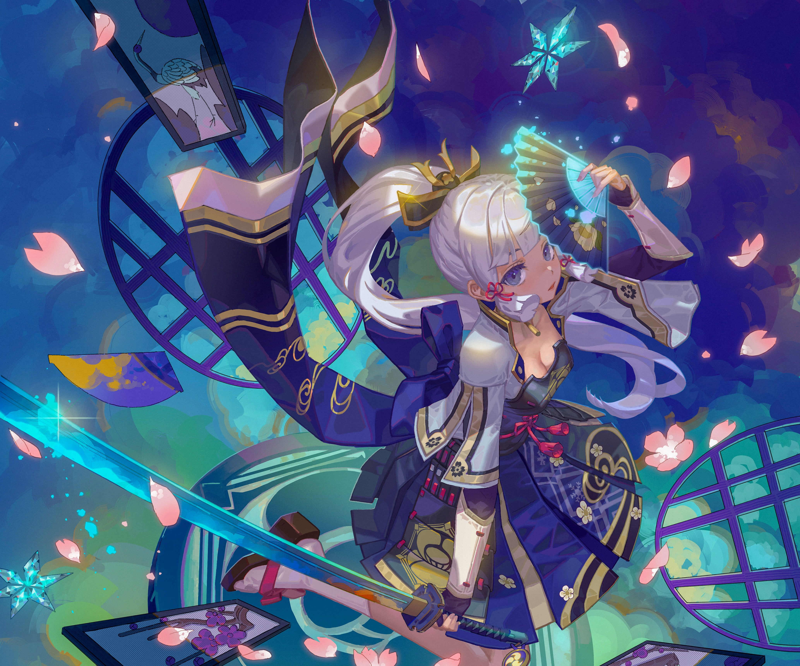
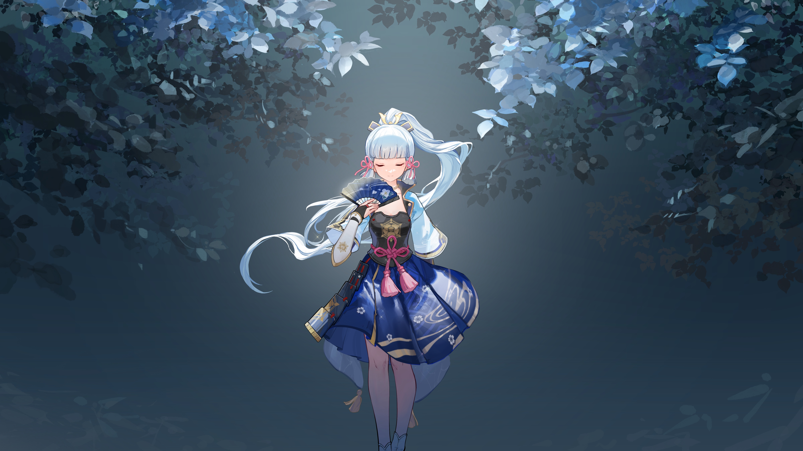
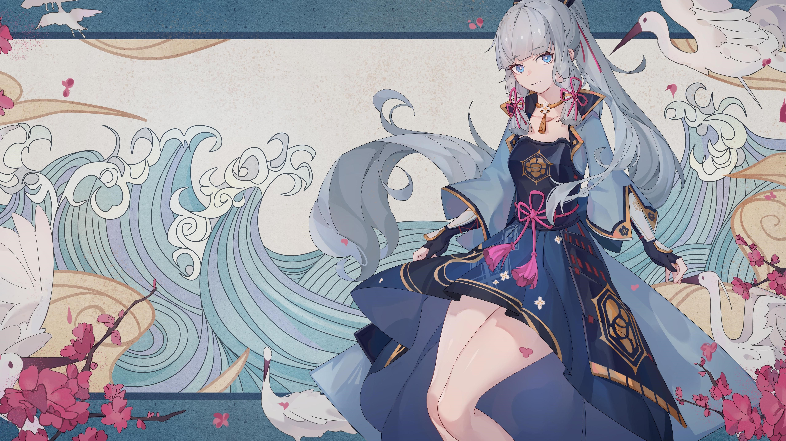
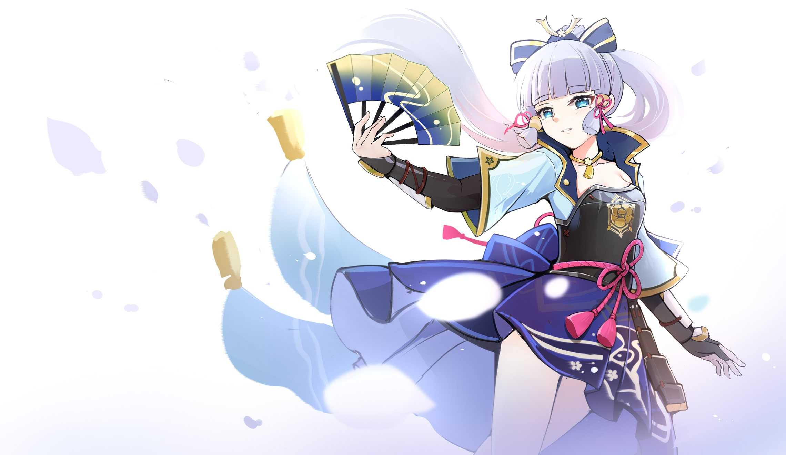
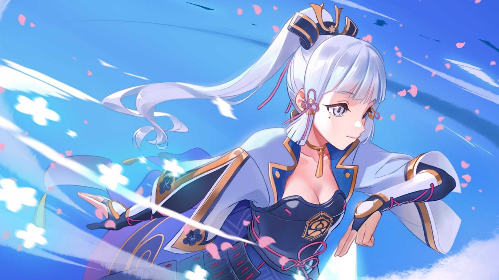

Kamisato Ayaka é uma personagem do elemento Cryo de Genshin Impact. Ela é responsável pelos assuntos internos e externos do Clã Kamisato e é a irmã mais nova de Kamisato Ayato. Bela, digna e nobre, Ayaka ganhou o título de Shirasagi Himegimi e é considerada um modelo de perfeição em Inazuma.